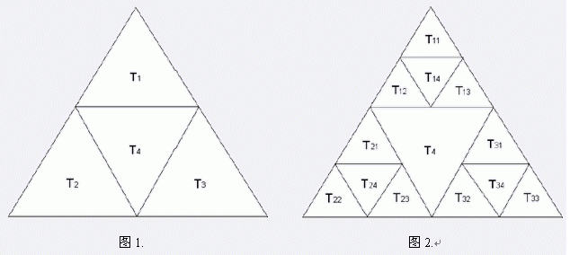

画一个等边三角形，把三边的中点连接起来，得到四个三角形，把它们称为 $T_1,T_2,T_3,T_4$，如图 $1$。把前三个三角形也这样划分，得到 $12$ 个更小的三角形：$T_{11},T_{12},T_{13},T_{14},T_{21},T_{22},T_{23},T_{24},T_{31},T_{32},T_{33},T_{34}$，如图 $2$ 。把编号以 $1$，$2$，$3$ 结尾的三角形又继续划分…最后得到的分形称为 Sierpinski 三角形。

如果 $B$ 不包含 $A$ ，且 $A$ 的某一条完整的边是 $B$ 的某条边的一部分，则我们说 $A$ 靠在 $B$ 的边上。例如 $T_{12}$ 靠在 $T_{24}$ 和 $T_4$ 上，但不靠在 $T_{32}$ 上。给出 Spierpinski 三角形中的一个三角形，找出它靠着的所有三角形。
 Comet OJ
Comet OJ